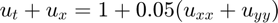
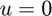
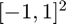
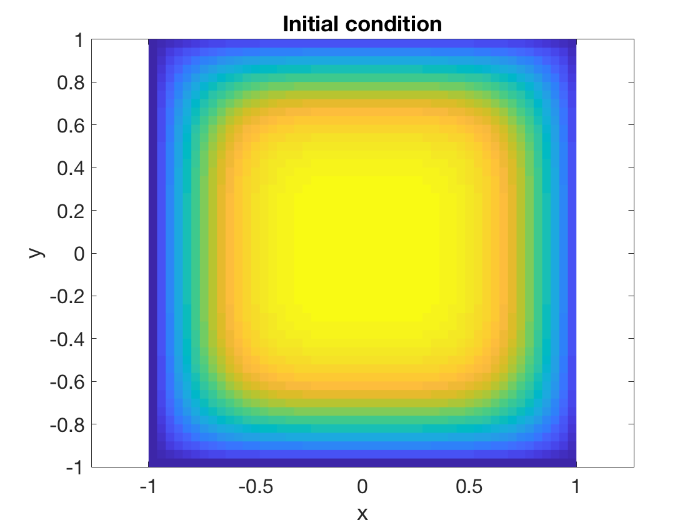
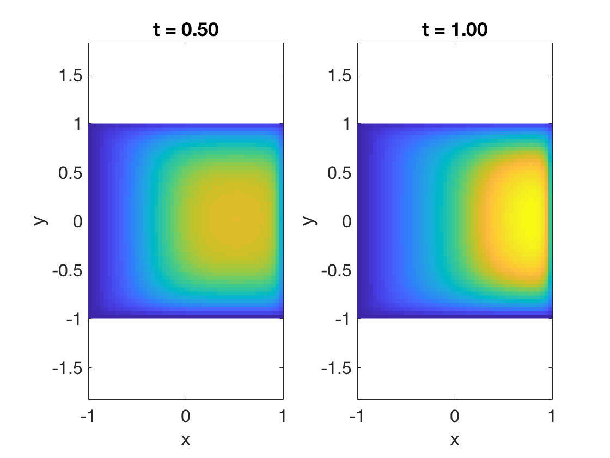

function advdiff2D % ignore this line
We will solve an advection-diffusion problem, , where  on the boundary of the square .
m = 50; n = 50; [X,Y,d] = rectdisc(m,[-1,1],n,[-1,1]);
The initial condition we specify here is used to impose its boundary values on the solution at all times.
U0 = (1-X.^4).*(1-Y.^4); pcolor(X,Y,U0) caxis([0 1]), axis equal, shading flat % ignore this line title('Initial condition') % ignore this line xlabel('x'), ylabel('y') % ignore this line
This next function maps the unknowns, given in a vector shape, to a matrix of values including the boundaries.
function U = unpack(w) U = U0; % get the boundary right U(~d.isbndy) = w; % overwrite the interior end
The next function drops the boundary values and returns a vector of the interior values. It's the inverse of the unpack function.
function w = pack(U) w = U(~d.isbndy); end
This function computes the time derivative at the interior nodes only.
function dwdt = timederiv(t,w) U = unpack(w); Uxx = d.Dxx*U; Uyy = U*d.Dyy'; % 2nd partials dUdt = 1 - d.Dx*U + 0.05*(Uxx + Uyy); % PDE dwdt = pack(dUdt); end
Since this problem is parabolic, a stiff integrator like ode15s is a good choice.
t = linspace(0,1,3);
[t,W] = ode15s(@timederiv,t,pack(U0));
W = W.'; % each column is one time instant
We plot the solution at two different times. Observe that the boundary values are identical to those of the initial condition.
for k = 1:2 subplot(1,2,k) U = unpack(W(:,k+1)); pcolor(X,Y,U) axis equal, shading flat % ignore this line caxis([0 1.9]) % ignore this line title(sprintf('t = %.2f',t(k+1))) % ignore this line xlabel('x'), ylabel('y') % ignore this line end
end % ignore this line